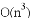

You’ve chosen a good design; your algorithm choice is sound; you are keeping all the different pipes (network, storage, memory, CPU, power) fully-utilized and at approximately equal levels; you’ve applied all the appropriate compiler optimization and server configuration settings; somehow it isn’t enough to give your software the performance it needs. What now?
Code tuning is becoming a bit of a lost art, except in larger products where all the obvious levers have already been pulled. In the old days, grey-bearded gurus would hand-code assembly-language inner-loop routines because compilers were not yet as good as a human could be. This is no longer the case, but you can still make a major difference in performance with some important choices in how you code something. Pay attention to what functions you use and how much data you have. Is your data space growing fast? Large-but-relatively-unchanging is better than almost-as-large-but-highly-variable. In these cases, rewriting a chunk of code might make a noticeable difference. When data sets get large, the software maxim of “smaller is faster” really sets in. In these cases, you need to pay special attention to your data structure choice. Algorithms (“work smarter”) can save CPU and battery, whereas data structures (“work smaller”) help with everything else: RAM, storage, network, etc. When you are running out of RAM, you’ll do almost anything to generate more (or consume less!). Stay tuned….
The next journey is largely algorithmic, based on a question from the earliest chapters. Have fun!
Is Number Prime (Series)
Given number, return whether it is prime. Prime numbers are only evenly divisible by themselves and 1.
Before moving on, quickly write a naïve isNumberPrime, and then optimize it.
OK, hopefully you’ve spent good quality time with pencil, paper, marker, whiteboard. From our side, here is a naïve implementation we came up with on very short order. No guarantees!
What do you see? Is it a starting point?
Counting Primes
Build on the isNumberPrime(num) function at left to count the primes that are equal or less than given integer.
Second: add the ability to profile this function, measuring progress as we optimize isNumberPrime.
function isPrime(num) {
for(var count=1; count<=num; count++) {
if (num/count == parseInt(num/count))
{ return false; }
}
return true;
}
Chapter 21 – Optimization
Is Number Prime (Series) – continued
For the record: no, the previous source is a piece, but not a piece of code. It doesn’t work; it considers nothing prime (some people are just impossible to please). Fixing it, now we have the following. This should be much better, but again, no guarantees!
function isPrime0(num)
{ // start at 2 not 1
for (var count = 2; count < num; count++) { // < num, not <= num
if (num / count == parseInt(num / count)) {
return false;
}
}
return true;
}
Hopefully isPrime0 will work as a starting point. Also, below is some code to quantify our improvements. Using a function pointer enables me to quickly measure new routines.
function countPrimesUpTo(limit, primeFn)
{
var count = 0;
var start = performance.now();
for (var num = 0; num <= limit; num++) {
if (primeFn(num)) {
count++;
}
}
var end = performance.now();
return "The function " + primeFn.name + "()"
+ " found " + count + " primes"
+ " in " + (end - start) + " msec.";
}
countPrimesUpTo(1000000,isPrime0); // Here’s how we’ll use the profiler.
What do you think about this implementation? How similar is it to yours? What might you expect the run-time performance to be, if we counted primes up to 1 million? Because the larger the number, the greater number of possible divisors we must check, the complexity of this function as num grows is O(n2). The fact that we count all of them compounds the problem, so we should expect O(n3) behavior.
On this machine, isPrime0 returned that there are 78500 primes under 1 Million, and it did so in 501.5 seconds. That will be our baseline. Do you note anything about isPrime0? Does it do all that it should? Specifically, where’s the bug?
Chapter 21 – Optimization
Is Number Prime (Series) – continued
The isPrime0 function is fine – unless you expect it to return correct answers for all inputs. (-:
Specifically, now we are considering too many numbers to be prime. (That kind of degrades the whole prime label, if you get what I mean. We need that club to be more exclusive.) Negative numbers cannot be prime. Fractional numbers are not prime. Also, the numbers 0 and 1 are by definition not prime. So, as it turns out, we cannot consider isPrime0 our baseline; we are still on the hunt for a function that returns correct outputs. Let’s fix it and see how far we get. Here’s isPrime1 (of many, to be sure):
// Fixes bugs: num = 1, 0, negatives, non-integers
function isPrime1(num)
{
if (num < 2 || num != parseInt(num)) { return false; }
for (var count = 2; count < num; count++) {
if (num / count == parseInt(num / count)) {
return false;
}
}
return true;
}
Unlike isPrime0, this one is correct. Non-integers, or anything below 2 is considered non-prime. Counting primes to 1 Million, it returned 78498 primes (correct!) in 476.3 seconds. We have a baseline! Sadly, for our  behavior, counting primes to 100 Million would take 100*100*100 longer: 15 yrs.
How can we make it faster? It is already fairly basic; it only calls parseInt – actually a good target. ParseInt exists to convert various inputs to integers – floats but also strings or even arrays. If expect only floats, we can use a less expensive function. Instead of parseInt, let’s try using Math.floor.
// Uses Math.floor() instead of parseInt().
function isPrime2(num)
{
if (num < 2 || num != Math.floor(num)) { return false; }
for (var count = 2; count < num; count++) {
if (num / count == Math.floor(num / count)) {
return false;
}
}
return true;
}
Chapter 21 – Optimization
Is Number Prime (Series) – continued
Before we go further, it is important to set our performance goals. Don’t go optimizing unless you have some sort of goal in mind. Here it is: 1) we want to count the primes up to 100 Million, in 60 seconds; 2) we also want to be able to count primes up to 1 Billion but we’re not sure how long that should take.
So how did isPrime2 fare when measured? A lot better than isPrime1! Specifically counting primes to 1 Million took 147.7 seconds, which is an improvement of more than 3x over previous baseline. Nice! Now what? Would it be possible to eliminate the function call altogether? What do you recommend?
As it turns out, there is an even less expensive way to check whether something is an integer. Do you remember the modulus operator %? Consider what num might be after executing num = num % 1. Basically, it returns the less-than-one fractional component of the number. Certainly, any primitive operator (such as + - * / % & | ^ ~) will be much faster than any function call.
Let’s make this quick change and measure the improvement.
// Uses % instead of Math.floor().
function isPrime3(num)
{
if (num < 2 || num % 1) { return false; }
for (var count = 2; count < num; count++) {
if (num % count == 0) {
return false;
}
}
return true;
}
What improvement do you expect? In a way, it depends on how bad you think Math.floor is…. The function isPrime3 completes counting 1 million primes in 111.1 seconds. That’s a nice 25% cut. As before, you will see plenty of variability in your own measurements, and a good practice is to create as stable and reproducible an environment as you can, make 5 or 7 measurements, throw out the best and worst measurements, and average the rest. This is what I did for this chapter’s measurements.
That seems like as much as we can squeeze out of the actual math operation. What else is there? Well, let’s think through all the values of count that we are dividing against num. The values are 2, 3, 4, 5, 6, … wait a minute! 4 and 6 aren’t going to matter. The value 2 is the only even one we really care about. We can eliminate all the rest of the even numbers from our FOR loop! We should expect this to cut our run-time basically in half. On the next page is the updated code, and following that we mention how it impacted the performance. What do you expect?
Chapter 21 – Optimization
Is Number Prime (Series) – continued
Here is updated code. Note how we immediately exit on special cases – the very definition of fail-fast.
// Only check odd factors (after checking 2).
function isPrime4(num)
{
if (num % 2 == 0 && num > 2) { return false; }
if (num < 2 || num % 1) { return false; }
for (var count = 3; count < num; count += 2) {
if (num % count == 0) {
return false;
}
}
return true;
}
The isPrime4 function counts 1 Million primes in 60.7 seconds: not quite a 2x speedup, but close. So far we have a 7.5x acceleration from our isPrime1 baseline of 476 seconds. This is good, but what else can we do to reduce the number of unnecessary divisors?
Think about various prime factors of a compound number. How large could these prime factors be? Prime factors, when multiplied by other prime factors, equal a compound number. A number like 36 has (multiple) prime factors of 2 and 3. We would immediately discover this number is not prime, upon checking 2, but that doesn’t help us understand how far toward a number we need to check divisors, before having confidence that the number is prime (what if our 36 were 37 instead?). Perhaps we need to check factors up to a specific fraction of the given number?
Maybe a different example. To think more clearly about this first-prime-to-number ratio, let’s pick a number with only two prime factors. How about 65 – prime factors are 5 and 13. When we get to the 5, we again have discovered that it is not prime. A little better, but again we haven’t learned anything – it’s not as if we will always hit all the primes for a number once we get to 10% of the number. There are numbers smaller than 65 that have first-primes bigger than 5, it seems. What are they? Well, if we want the first-prime to be larger, then we need the second-prime to be smaller. How about trying numbers with prime factors really close together – a square: 49. Squares give us first-prime factors that are as far from zero as possible (if they were any bigger, they would exceed the second-prime).
This guides our next optimization! Just as we try only odd divisors (after trying 2), we also need to try divisors only as high as the number’s square root. For 97, we need not try prime factors higher than 9.
But will this make a real difference in performance? What would a good implementation be?
Chapter 21 – Optimization
Is Number Prime (Series) – continued
Here’s an implementation of isPrime5 that tries divisors up to the number’s square-root.
// Only check factors up to sqrt(num).
function isPrime5(num)
{
if (num % 2 == 0 && num > 2) { return false; }
if (num < 2 || num % 1) { return false; }
for (var count = 3; count <= Math.sqrt(num); count += 2) {
if (num % count == 0) { return false; }
}
return true;
}
How is performance? Fabulous! To count primes under 1 million, isPrime5 uses 130.4 millisecs (ms)! Compared to isPrime4, it’s a 500x speedup for that benchmark. Also, it means we can count higher. How about 50 million instead of 1 million? This successfully runs and completes in 30.7 seconds.
Gee, how do we get much better than that? Maybe we don’t. Something important to note here is that you should always have reasonable performance goals in mind before you start optimizations. Then stop optimizing when you reach them. Without these goals, how will you ever know when you should be done with it? (I realize some of you may feel I should be done with this journey, but I’ll continue.)
If, like us, you are a purist and want to profile your code using single-pass measurements with just a single large value, we can help. Here is a set of progressively larger prime numbers, as well as a set of roughly correlated compound numbers that require significant calculation to prove as non-prime:
var bigPrimes = [ 99991, 999983, 9999991,
99999989, 999999937, 9999999967,
99999999977, 999999999989, 9999999999971,
99999999999973, 999999999999989, 9007199254740881 ];
var bigCompounds = [ 99221, 995779, 9922331,
99799811, 999634589, 9999399973,
99999515333, 999966000289, 9999919930081,
99999919999487, 999998950017311, 9007197807561043 ];
What is our next step? Maybe we can unroll our inner loop a little, to skip a few more obvious values – not unlike what we are doing when we count += 2 each time (skipping the even values). Could we do that for multiples of three as well? Maybe, but would that make a noticeable difference?
Chapter 21 – Optimization
Is Number Prime (Series) – continued
Turns out it does help, considerably. Compared to isPrime5, our new function isPrime5a executes in about 2/3 the time. From the changes we made to our inner loop, this makes sense.
function isPrime5a(num)
{
if (num % 2 == 0 && num > 2) { return false; }
if (num % 3 == 0 && num > 3) { return false; }
if (num < 2 || num % 1) { return false; }
for (var count = 5; count <= Math.sqrt(num); count += 4) {
if (num % count == 0) { return false; }
count += 2;
if (num % count == 0) { return false; }
}
return true;
}
So now we are counting primes to 1 million in about 84.1 millisecs, and to 100 Million in about 46 secs. This is great – we are passing our first performance goal!
Side note: a single run of isPrime5a(9007199254740881) – our biggest prime – completes in 270ms. Our baseline isPrime1 scales linearly, needing 2.5 minutes for 9999999967 (1,000,000x faster). We can extrapolate what isPrime1 needs for 9007199254740881: a whopping 4.4 years!
Let’s say that the business team identified an exciting new opportunity for our product if we can optimize it even more than before. Our performance goals are now threefold:
1) Count primes to 100 Million in 60 seconds, first time (with ‘cold cache’),
2) Count primes to 1 Billion on standard laptop without crashing, and
3) (new) Count primes to 100 Million in 1 second thereafter (with ‘warm cache’).
These are very aggressive goals – remember when we were counting primes to 1 Million in 476 secs?
Our isPrime5a function has been good to us so far. Let’s set it loose counting primes toward 1 Billion, shall we? Good news: after 17 minutes or so, it eventually gets to 1 Billion without error. So, we’ve met our new performance goal #2 as well!
Goal #3 is going to be tough. What is a reasonable step toward that goal? We already calculate primes quickly; the only way faster would be to not calculate at all … ah! Perhaps we won’t calculate: we’ll remember them. Yes, a caching strategy. Just as we did earlier with Fancy Fibonacci, let’s save previous results when asked if a number is prime.
The next page should have a reasonable implementation of our caching scheme, but before you turn to it, create this yourself. It’s for your own good, you know.
Chapter 21 – Optimization
Is Number Prime (Series) – continued
We are now up to isPrime6 – and if this one doesn’t speed things up, then we don’t know what will. What are the issues, if any, with this implementation?
// Cache previous results.
var prevResults = [false, false, true];
function isPrime6(num)
{
if (num < 0 || num % 1) { return false; }
if (prevResults[num] === undefined) {
if (num % 2 == 0) { prevResults[num] = false; }
else {
for (var count = 3; count <= Math.sqrt(num); count += 2) {
if (num % count == 0) {
prevResults[num] = false;
break;
}
}
if (count > Math.sqrt(num)) { prevResults[num] = true; }
}
}
return prevResults[num];
}
Looks like this version will be a real memory hog, that’s the main issue. As a result, though, it should work really well for subsequent requests. In fact, this is exactly the case. It counts primes under 1 Million in 0.189 seconds! Furthermore, it counts primes to 100 million with cold cache in less than 90 seconds, and second time in just 0.653 seconds! So, we have now met performance goal #3. We still need to get the “cold cache” version down to 60 second for 100 Million. While we’re here let’s see whether isPrime6 can scale to 1 Billion.
Unfortunately, we don’t get there. At something like 117 million, we run out of memory and crash (with the “Aw, Snap!” screen in Chrome, for example). Ugh. Why is this, and what do we do now?
Chapter 21 – Optimization
Is Number Prime (Series) – continued
Let’s continue going after goal #1 before starting in on the scalability goal (#2). How else can we make this process faster? How about an extension of our (don’t check evens) idea? What if we only check prime numbers as the factors: only check whether the number is divisible by 2, 3, 5, 7, 11, 13, etc. As the numbers get larger, this should save a lot of time. How would you know whether a number is prime, without calling yourself to find out, though? (-: I think we would specifically cache an array of only the primes, so we can oh-so-quickly breeze through them to check whether to add to our prime list. This won’t necessarily scale any higher, but it should be a good bit faster! Let’s code it first, then measure it.
// Only check PRIME factors (up to sqrt). Cache primes for this.
// Try cache first, before checking for negative / fractional.
var prevResults = [false, false, true];
var primes = [2];
function isPrime7(num)
{
if (prevResults[num] === undefined) {
if (num < 0 || num % 1) { return false; }
while (prevResults.length <= num) {
var next = prevResults.length;
var rootNext = Math.sqrt(next);
for (var primeIdx = 0; primes[primeIdx] <= rootNext; primeIdx++) {
if (next % primes[primeIdx] == 0) {
prevResults.push(false);
break;
}
}
if (primes[primeIdx] > rootNext) {
prevResults.push(true);
primes.push(next);
}
}
}
return prevResults[num];
}
So how did isPrime7 do? Did it meet our performance goals? Yes, it met some! First, we counted to 100 Million primes in only 33.91 sec, cold cache. With warm cache, we ran in 0.685 sec for subsequent 100 Million requests! So, we have goals #1 and #3 taken care of, nicely. We’ve really come far!
About goal #2… how far can isPrime7 count, anyway? Not a lot farther, as it turns out. It counts to 122 Million without problem (getting there in 40sec), but 123 Million causes an “Aw, Snap!” So there.
Chapter 21 – Optimization
Is Number Prime (Series) – continued
We’ve met our #1 and #3 performance goals. The only one remaining is scalability, so we must figure out how to jettison memory usage without sacrificing the big speed that we’ve won. Let’s assess.
Currently we are caching previous results – a boolean for every positive integer. To count to 1 Billion, we’ll need a Boolean for each of those. In JavaScript, a Boolean consumes 4 bytes, so if this algorithm did get all the way to 1 Billion, the prevResults array would consume 4GB of memory – whoa. Also, what about the cached primes array? At 100 Million, this is an array of 5.76 Million elements. These are numbers, hence eight bytes, but at 46 MB it still looks pretty svelte compared to prevResults. What if we tossed the whole prevResults array and relied only on primes[], working solo? Here’s the code:
// Cache primes ONLY (not prevResults[]). Mem usage dramatically reduced.
var primes = [2];
var highestCheck = 2;
function isPrime8(num)
{
if (num < 2 || num % 1) { return false; }
if (num % 2 == 0) { return (num == 2); }
var checkStart = Math.min(num, highestCheck) | 1;
for (var check = checkStart; check <= num; check += 2) {
var rootCheck = Math.sqrt(check);
for (var primeIdx = 0; primes[primeIdx] <= rootCheck; primeIdx++) {
if (check % primes[primeIdx] == 0) { break; }
}
if (primes[primeIdx] > rootCheck) {
if (check > highestCheck) { primes.push(check); }
if (check == num) {
highestCheck = Math.max(highestCheck, num);
return true;
}
}
}
highestCheck = Math.max(highestCheck, num);
return false;
}
What do you think? Will we still see the gains we earned? Form a view, then join me on the next page.
Chapter 21 – Optimization
Is Number Prime (Series) – continued
The isPrime8 implementation is fascinating. It was able to count primes to 100 Million in about 50 seconds, first time (cold scenario). However, as we might expect from removing a direct-result cache, the warm scenario did lose some of the previous gains. Specifically, a second-time count to 100 Million required about 25.6 sec, rather than about 700 ms with isPrime7. On the flip side, it scales. It scales! It counted past 500 Million (it’s still going as I type this!). I’ll need to update this when it does in fact cross 1 Billion, but I trust that this will certainly occur. (Yep, it did.)
To win the warm scenario, we’ll need to hold on to some flavor of our prevResults array. We also need to reduce our size though, and the direct result cache is by far our largest size component. This suggests that we go right at the big memory consumer and figure out even a small improvement.
To really squeeze space, we could convert a boolean array into a BitArray. Here, we put 32 bits into the space usually filled by 1 boolean; this would dramatically reduce our cache’s size. Let’s give it a try.
function BitArray(numBits)
{
var arr = [];
for (var i=0; i<(numBits/32); i++)
{
arr[i] = 0;
}
this.numBits = numBits;
this.read = function(bitIdx)
{
if(bitIdx<0 || bitIdx % 1
|| bitIdx >= this.numBits)
{ return; }
var bitNum = bitIdx & 0b11111;
var arrIdx = bitIdx >>> 5;
return(arr[arrIdx]>>bitNum) &1;
}
this.set = function(bitIdx) {
if( bitIdx < 0 || bitIdx % 1)
{ return; }
if (bitIdx >= this.numBits) {
var idx=(this.numBits+31)/32
for(;idx<(numBits/32);idx++)
{ arr[idx] = 0; }
this.numBits = bitIdx + 1;
}
var bitNum = bitIdx & 0b11111;
var arrIdx = bitIdx >>> 5;
arr[arrIdx] |= (1 << bitNum);
}
this.clear = function(bitIdx) {
if (bitIdx < 0 || bitIdx % 1)
{ return; }
if (bitIdx >= this.numBits) {
var idx=(this.numBits+31)/32
for(;idx<(numBits/32);idx++)
{ arr[idx] = 0; }
this.numBits = bitIdx + 1;
}
var bitNum = bitIdx & 0b11111;
var arrIdx = bitIdx >>> 5;
arr[arrIdx] &= ~(1 << bitNum);
}
}
Chapter 21 – Optimization
Is Number Prime (Series) – continued
// prevResults to BitArray: 30x smaller
// than bool arr. Otherwise is isPrime7.
var primes = [2];
var baPrimes = new BitArray(3);
baPrimes.clear(0);
baPrimes.clear(1);
baPrimes.set(2);
function isPrime9(num) {
var result = baPrimes.read(num);
if (result !== undefined)
{ return result; }
if (num < 0|| num % 1)
{ return false; }
while (num >= baPrimes.numBits) {
var next = baPrimes.numBits;
var rootNext = Math.sqrt(next);
for ( var primeIdx = 0;
primes[primeIdx] <= rootNext;
primeIdx++) {
if (next%primes[primeIdx] ==0) {
baPrimes.clear(next);
break;
}
}
if (primes[primeIdx] > rootNext) {
primes.push(next);
baPrimes.set(next);
}
}
return baPrimes.read(num);
}
There simply is no better way to finish off a performance journey than with a geeky bit-encoded data representation. Essentially, isPrime9 performs as isPrime7 does, but without an oversized memory footprint.
The results are fabulous. First, scalability: isPrime9 runs to 1 Billion and keeps going! On my Mac, it almost reaches 2 Billion: much better than the requirement.
On the other goals, during our first-time counting primes to 100 Million, isPrime9 consumed about 30.5 sec. This is well ahead of our goal of 60 secs (and destroys isPrime1’s expected 15 yrs). Great!
Even better, the second-time count (“warm cache”), ran in 0.964 sec. It feels awesome to barely meet your performance goals, as you know you didn’t add unnecessary optimization (which can convolute code).
What do you think about our final code? Is it as readable as the first version? Might an intern innocently ‘fix’ a bug and break an important feature by mistake? Yes – that is a reasonable worry. Like racehorses, high-performance code can be brittle. Always measure, and watch for regressions!